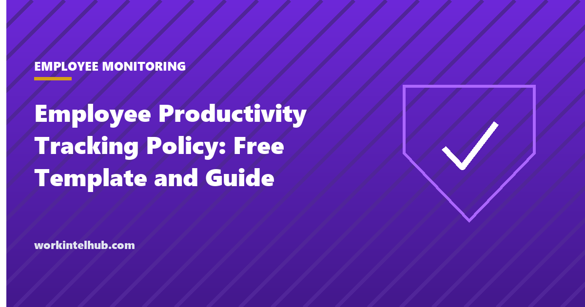

Employee Productivity Tracking Policy: Free Template and Guide

A productivity tracking policy tells employees what the organisation measures about their work, how, why, who sees it and what it is used for. Without one, a monitoring tool is a surprise, and surprises about surveillance are the fastest route to the trust problems, the state-law complaints and the quiet resistance that make the tool useless. With one, tracking becomes a measurement system people can understand and challenge.
This page covers what a policy should and should not measure, the laws that require notice in New York, Connecticut and Delaware and consent for some data elsewhere, and the parts of a policy that keep it fair. The template is an eight-section policy, a metrics register that records every measure with its purpose and owner, and an employee notice and acknowledgement. The monitoring policy template covers security and conduct monitoring; this one covers productivity measurement specifically.
Download the templates
Free files: Word, Excel and PDF
Three files, free, no email required. Word to edit, Excel to track, PDF to print or share.
Templates open in Microsoft Word, Excel, Google Docs and Sheets, LibreOffice and any PDF reader. Free to use and adapt for your organisation.
What is in the template
- Policy. Eight sections: purpose, what is measured, what is not, data and retention, individual-level review, notice, employee rights, governance.
- Metrics register. Every measure with its definition, source, purpose, level and owner, seeded with five sensible defaults.
- Data inventory. Every data element with access, retention and the notice or consent it needs.
- Notice tracker. Who was notified, when, how, and whether they acknowledged.
What to measure and what to leave alone
Productivity is output over input, and for knowledge work the output is the hard part. Measure outcomes a team recognises (items completed, cycle time, quality, customer results), workload (so overload is visible), and capacity (so planning is honest). Use activity data (application categories, active time) only in aggregate, to see meeting load or tool friction, and never as a proxy for effort; the output metrics guide explains what goes wrong when activity becomes the score. Leave keystrokes, screenshots, webcams, private messages and off-hours location out; the privacy line guide gives the reasons, and none of them improve productivity.
The metrics register is the policy's enforcement mechanism: a measure that is not in the register is not collected, and every measure in it has a purpose someone signed.
Notice, consent and the state rules
New York requires written notice of electronic monitoring on hire, acknowledged in writing, and a posted notice; Connecticut requires prior written notice posted where employees see it; Delaware requires a one-time acknowledged notice. Location tracking needs consent or notice in several states, biometric data needs written consent in Illinois, Texas and Washington, and Colorado and California now regulate automated decisions that use this data. The monitoring laws by state page has the detail, and the consent form covers the signature. The notice tracker in the workbook is the record that it happened.
Keeping it fair in practice
- Agree measures with each team before switching anything on; measures imposed are measures gamed.
- Report at team level by default; individual review needs HR approval, a reason and the employee informed.
- Never let one number decide pay, discipline or employment; the policy says so and managers are trained on it.
- Give employees their own data; people who can see their numbers trust the system more and fix problems themselves.
- Review the register quarterly with teams and retire measures nobody uses. The ethical monitoring playbook covers the rollout.
Key takeaways
- A productivity tracking policy says what is measured, what is not, who sees it, how long it is kept and what it is used for.
- Measure outcomes, workload and capacity; use activity data only in aggregate; leave keystrokes, screenshots and off-hours data out.
- New York, Connecticut and Delaware require written notice; location and biometric data need consent in several states.
- A metrics register with purposes and owners is what keeps the policy honest.
Frequently asked questions
What is an employee productivity tracking policy?
A written policy that tells employees what the organisation measures about their work, how the data is collected, who can see it, how long it is kept, how it is used and what rights they have. It covers productivity measurement specifically; a monitoring policy covers security and conduct monitoring more broadly.
Is it legal to track employee productivity?
Yes, on company systems, with notice. New York, Connecticut and Delaware require written notice of electronic monitoring; several states regulate location tracking and biometric data; Colorado, California, Illinois and New York City regulate automated decisions that use the data. Keystroke logging, screenshots and webcam capture are lawful in most states but are the practices most likely to breach trust and attract claims.
What productivity metrics should a policy allow?
Outcome measures the team recognises (completed work, cycle time, quality), workload and capacity measures, and aggregate activity measures such as meeting load and focus time. The policy should name them in a metrics register with a purpose and an owner for each.
Should managers see individual activity data?
Only with HR approval, for a stated reason, with the employee informed and the review documented. Team-level aggregates serve almost every legitimate management purpose; individual activity data serves mostly suspicion.
How long should productivity data be kept?
Raw activity data for 30 to 90 days; aggregate reports for one to two years; nothing longer without a specific reason. The data inventory records the retention for each element, and deletion on schedule is part of the policy.